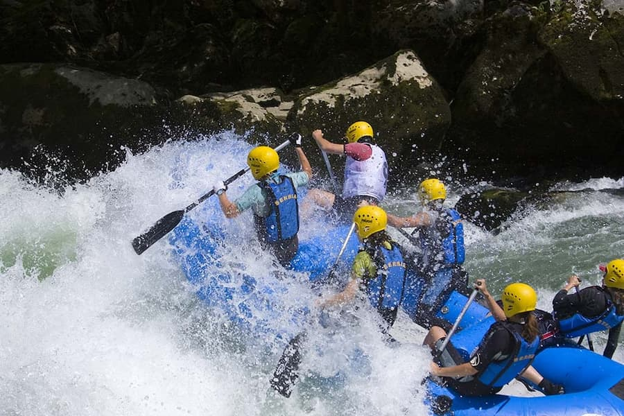

White Water Rafting

Our mission is to provide safe, exciting, and unforgettable white water
rafting experiences for people of all ages. We want our clients to enjoy
nature, discover new adventures, and create lasting memories with their
family and friends. We are dedicated to providing friendly service and
making every rafting trip fun, safe, and enjoyable. Our motto is:
Adventure, Safety, and Memories on Every River.
History
White Water Rafting started with a simple goal: to help people enjoy
nature and experience the excitement of the river. Over the years, our
company has grown and welcomed many families, friends, and adventure
seekers. We want every visitor to have a fun and memorable experience
while exploring the river. Today, we continue to share our love for
rafting by providing safe adventures and friendly service for everyone.

Over the years, rafting has brought many people together through
adventure, teamwork, and a love for nature. Each trip gives families,
friends, and adventure seekers a chance to enjoy the river, take on
exciting rapids, and experience something new together. We have grown
by creating safe and enjoyable experiences while helping people make
great memories and appreciate the beauty of the river.